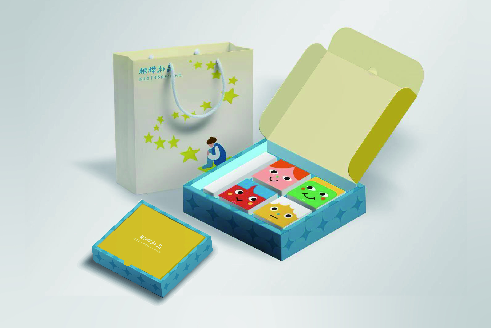

Autism Support Design



Background
This project was developed in the context of autism support and focuses on how nonverbal expression can be supported through making-based activities and visual communication.
Problem
For autistic youth, emotions and experiences may not always be easily expressed or understood through spoken language alone. Without supportive translation, nonverbal expression can remain difficult for outside audiences to recognize.
Approach
Based on play-based therapy and sensory interaction, this project encourages autistic youth to engage in nonverbal expression through hands-on making. These expressions are then translated into visual information through illustrations, labels, and brief text, making them easier for external audiences to understand.